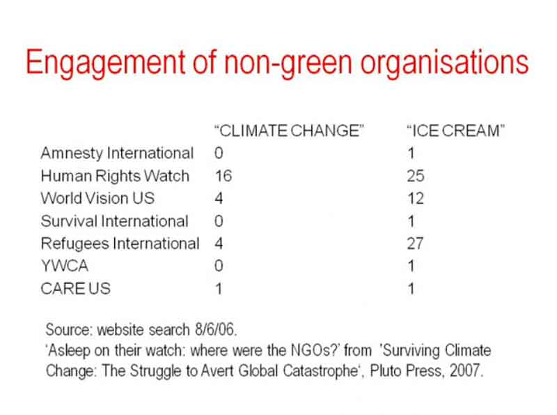
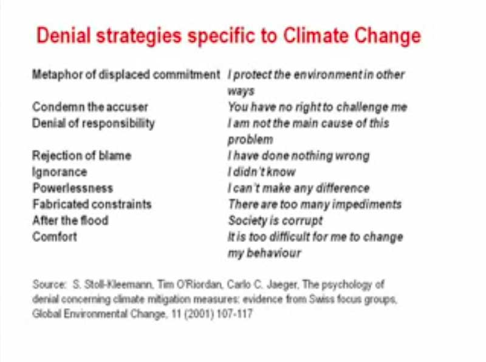
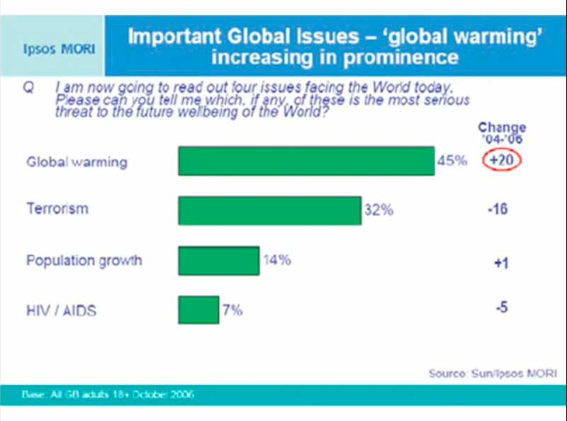
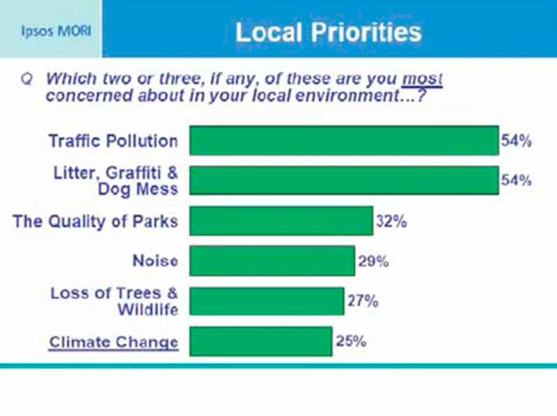
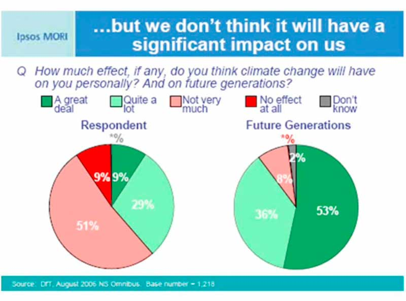
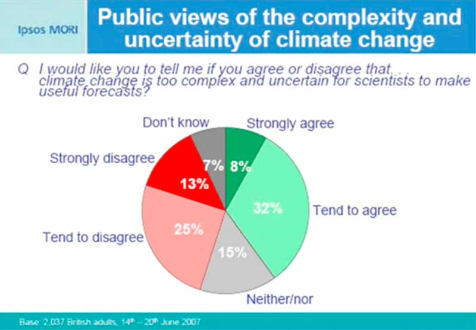
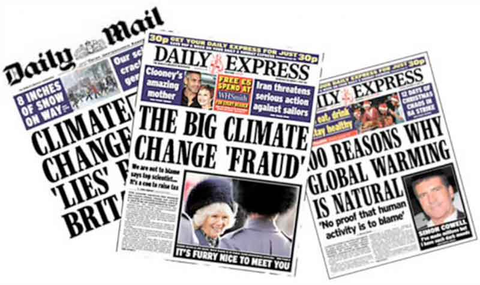
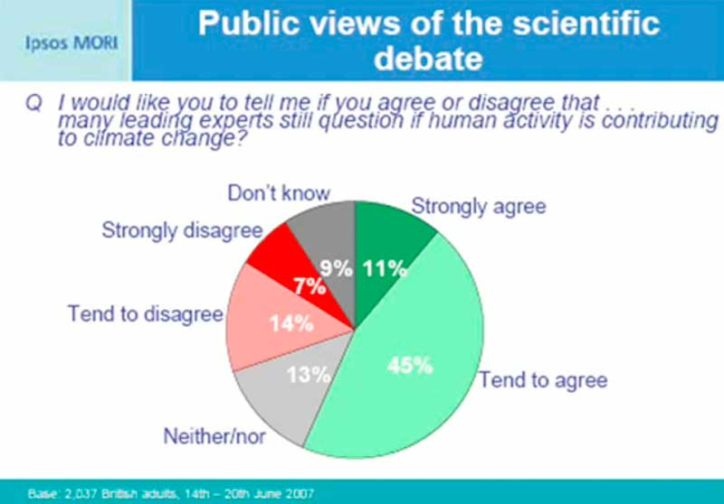

If you believe that climate change is not happening then you have a complete carte blanche for climate destructive behavior...In many ways, as animals, we depend for our response to things on our perception of threat, and therefore the psychology of risk is absolutely fundamental to climate change. There is a range of qualities that things have which really trigger what John Adams would call the "risk thermostat"—the point at which we automatically start to move into various forms of action. These are all really concerned with proximity. When we look at climate change we actually have something you could say is perfectly designed to confound our immediate risk and threat assessment process.
|
|
Our perception of risk is strongest to threats that are: | Climate change is: |
|
Visible With historical precedent Immediate With simple causality Caused by another "tribe"
And have direct personal impacts |
Invisible Unprecedented Drawn out With complex causality Caused by all of us
And has unpredictable and indirect |
This therefore means that when it comes to climate change our perception of risk or threat has to be generated and it leads us into a world of belief.
"Denial of global warming was socially organized... It took place in response to social circumstances and was carried out through a process of social interaction"
"The people appeared to use a series of interpretive narratives to deflect disturbing information and normalize a particular version of reality."
Her conclusion was:
"Knowing or not knowing appeared to be a political act."
In other words people made the decision whether or not they would know about it!

I did then a series of in-depth interviews with key figures from these organizations and what appeared clear on that was that there had been a deliberate decision within the organizations that climate change was outside what we would call their norms of attention: it was an environmental issue.
Here's a piece of research that was done in Switzerland. It was trying to get to the bottom of what are the actual storylines that people put up in resistance to information about climate change:

Those storylines then become consolidated through a social norm process where they practice them with other people. They hear them from other people. We're starting to see a situation now where after this initial period when there was a kind of potential free for all in terms of how we message and understand climate change, they are starting to now consolidate in certain clumps of attitudes or storylines. The point of social norms which make these so powerful is that if you have a storyline on climate change, and then you practice it with your friends or your colleagues and peers or you hear it back from them, it becomes reinforced as a belief regardless of whether it can stand up to challenge from external information. Because the greatest determiner of personal belief is what the people around you are saying.



This is, I have to say, in defiance of the evidence of the science which is showing this is moving very fast and is already well underway. People are choosing to frame this as an issue which is far ahead in the future therefore it doesn't have to be dealt with.

The final thing I should say is of direct denial of the science.
This I'm afraid we're going to be seeing a great deal more of:

What is interesting about the active denial is that where most of these storylines are appearing as a reaction to the information of climate change, the attitude behind this is one which is highly proactive...for political reasons—this then works its way through into social attitudes in forms like this:

As you can see the majority of people "believe" that many leading scientists argue that climate change is happening. This is a very very powerful social norm at the moment and one which is constantly repeated. These are in a constant state of flux, of constant negotiation, this is not the end of it. We're going to be seeing more and more of these.
What worries me is that over time they will tend to consolidate and become reinforced as clusters because people are likely then to hold on to a set once they have them, then reinforce those through their interactions both with individuals and the behavior that they express. In other words if you believe that climate change is not happening then you have a complete carte blanche for climate destructive behavior. Then doing that, in turn, is likely to reinforce your position. It becomes a constant loop.